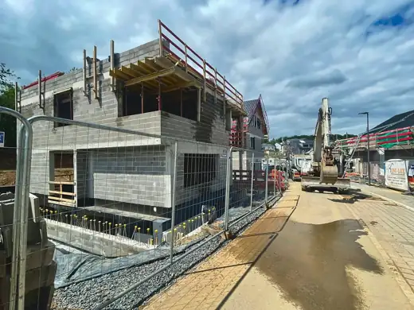
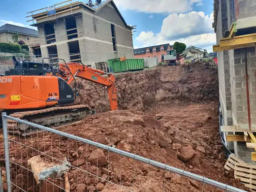
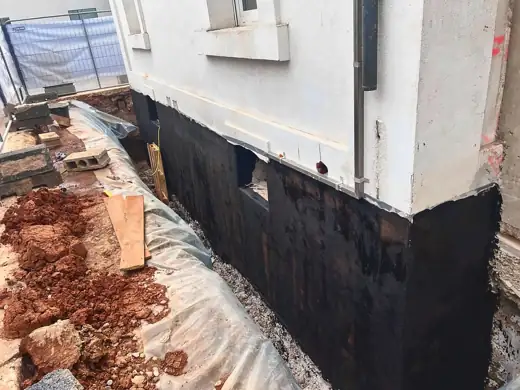
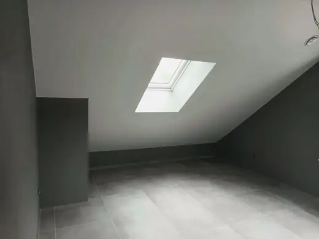

Wir bauen über und unter der Erde.
Rohbau, Erdarbeiten, Pflaster, Abdichtung und Sanierung: Sie bekommen alles aus einer Hand, mit festem Ansprechpartner und fairem Angebot.
- Eigenes Team und Gerät
- Alles aus einer Hand
- Norddeutschland

Kompetenz rund um Bau und Grundstück
Neun Bereiche, ein Ansprechpartner. Alles führen wir mit eigenem Team und Gerät aus und stimmen es für Sie aufeinander ab.

01Rohbau & Neubau
Fundament, Mauerwerk und Beton für Neubau und Anbau.
Mehr erfahren → 02
02Umbau, Sanierung & Innenausbau
Umbau, Modernisierung und Innenausbau aus einer Hand.
Mehr erfahren →
03Erdarbeiten & Baugruben
Baugruben, Aushub und Planum mit eigenem Gerät.
Mehr erfahren → 04
04Tiefbau, Leitungs- & Straßenbau
Leitungen, Kanal, Gehwege und Straßenbau.
Mehr erfahren → 05
05Pflaster & Außenanlagen
Pflaster, Einfahrten, Terrassen, Stufen und Mauern.
Mehr erfahren →
06Abdichtung & Drainage
Balkone, Terrassen und Keller trocken und dicht.
Mehr erfahren → 07
07Garten, Pflege & Winterdienst
Neuanlage, Pflege und Winterdienst das ganze Jahr.
Mehr erfahren →
08Reinigung & Objektservice
Baureinigung, Objektservice und Logistik.
Mehr erfahren → 09
09Rückbau & Entrümpelung
Entrümpelung, Auflösung und Kleinabbruch, besenrein.
Mehr erfahren →Mehr als nur ein Projekt
Aus der Praxis
Gegründet von einem Tiefbauer, der selbst im Graben stand und später Teams geführt hat.
Ein Angebot
Ein Angebot, eine Rechnung, ein Ansprechpartner, auch wenn mehrere Arbeiten ineinandergreifen.
Zuverlässig
Termine werden gehalten. Wenn sich etwas ändert, erfahren Sie es von uns zuerst.
Sauber
Wir arbeiten ordentlich, stellen Oberflächen wieder her und übergeben gemeinsam mit Ihnen.
Aus unseren Baustellen


So läuft Ihr Auftrag ab
- 1AnfragePer Formular, Telefon oder WhatsApp, gern mit Fotos.
- 2BesichtigungWir schauen uns die Lage vor Ort an.
- 3AngebotSchriftlich, transparent und mit Terminvorschlag.
- 4Ausführung & AbnahmeWir arbeiten sauber und übergeben gemeinsam.